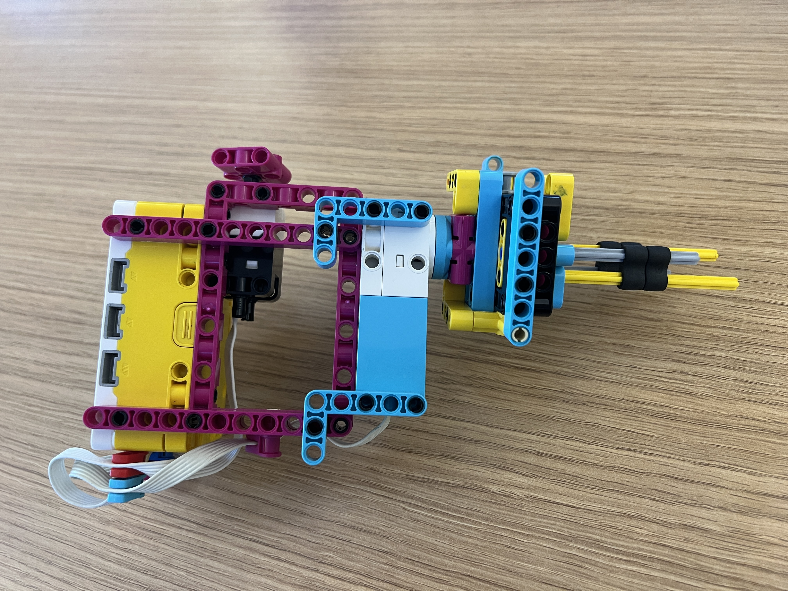
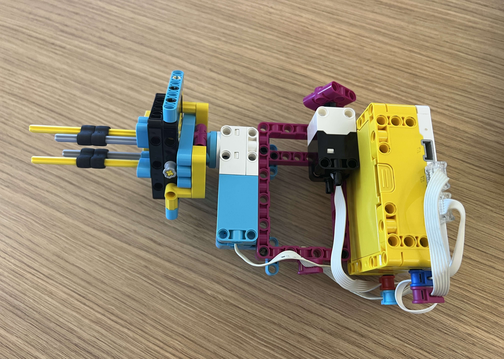

For this project, our goal was to make a tool for astronauts to use during spaceship repairs. The tool had to be able to be used with only one hand, in a spacesuit glove (we used ski gloves to mimick this), and in multiple directions (we tested right side up, sideways, and upside down). The purpose of the tool was to unscrew two nuts from Bolt A and move them to Bolt B as fast and efficiently as possible. On my tool, I added a button that could start and stop the spinning motion, plus reverse directions, and I added a handle for ease of holding. My tool could screw / unscrew both nuts at once, but the nuts had to be transferred between bolts separately.